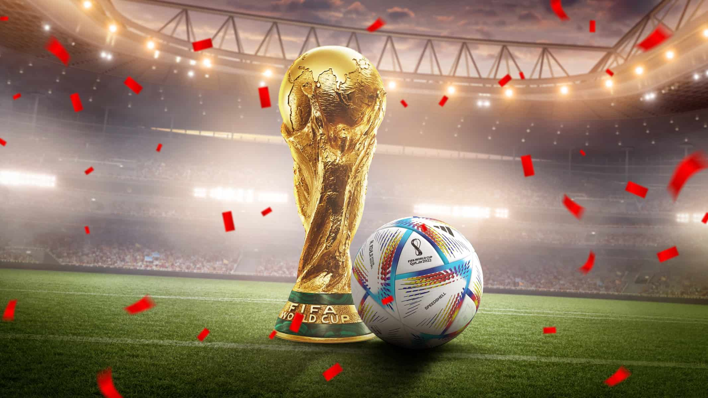
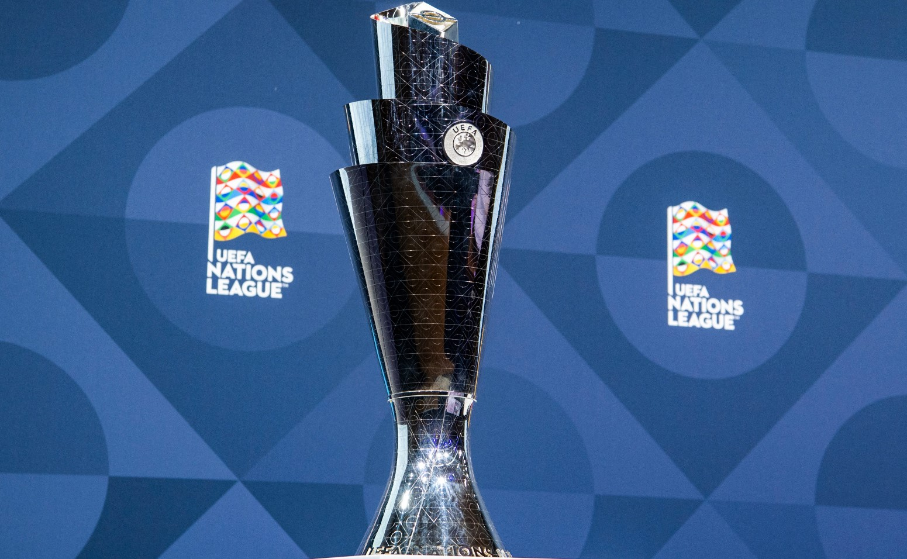

Mundial
es un torneo internacional de fútbol que se lleva a cabo cada cuatro años y es organizado por la Federación Internacional de Fútbol Asociación (FIFA). Es el evento deportivo más visto y seguido en todo el mundo. El torneo comenzó en 1930 y ha tenido lugar 22 veces hasta la fecha. La selección de Brasil es el equipo más exitoso en la historia del torneo, con un total de 5 títulos de la Copa del Mundo. Los equipos de Italia y Alemania les siguen con 4 títulos cada uno. El torneo se lleva a cabo en diferentes países anfitriones cada vez. El torneo consta de 32 selecciones, que compiten en un formato de eliminación directa después de la fase de grupos. La fase de grupos constará de 8 grupos de 4 selecciones cada uno, en el cual pasarán a octavos de final el primer y segundo clasificado de cada grupo.
El Mundial de Fútbol es un evento de gran importancia cultural y económica en todo el mundo, y se espera que atraiga a millones de espectadores tanto en persona como en línea. Además, los jugadores que participan en el torneo a menudo se convierten en héroes nacionales y globales, y la competición puede tener un gran impacto en la economía, la política y la cultura de los países anfitriones.
Eurocopa
es un torneo de fútbol que se celebra cada cuatro años y es organizado por la Unión de Asociaciones de Fútbol Europeas (UEFA). El torneo comenzó en 1960 y actualmente se celebra en años impares, alternando con la Copa del Mundo de la FIFA. El torneo consiste en una fase de clasificación, en la que los equipos nacionales compiten para obtener un lugar en la fase final del torneo. La fase final consta de 24 equipos, que se dividen en seis grupos de cuatro equipos cada uno. Los dos primeros equipos de cada grupo y los cuatro mejores terceros equipos avanzan a la fase eliminatoria, que incluye octavos de final, cuartos de final, semifinales y la final.
El equipo más exitoso en la historia de la Eurocopa es la selección de Alemania, con un total de 3 títulos. La próxima Eurocopa se llevará a cabo en 2024, y será organizada por Alemania. El torneo es considerado uno de los eventos deportivos más importantes y populares en Europa, y es seguido por millones de espectadores en todo el mundo. Además, los jugadores que participan en la Eurocopa a menudo se convierten en héroes nacionales y globales, y el torneo puede tener un gran impacto en la economía, la política y la cultura de los países anfitriones.

UEFA Nations League
es una competición de fútbol de selecciones nacionales que se juega cada dos años y que fue creada por la Unión de Asociaciones de Fútbol Europeas (UEFA) en 2018. La competición tiene como objetivo reemplazar los partidos amistosos internacionales con partidos competitivos, lo que aumenta el nivel de intensidad y competitividad de los encuentros. La Nations League está dividida en cuatro divisiones, A, B, C y D, en función del ranking de la UEFA de cada selección. Cada división se compone de cuatro grupos, y los equipos compiten en partidos de ida y vuelta en el transcurso de varios meses. Los equipos compiten por un lugar en la fase final de la Nations League, que consiste en partidos de semifinales, final y un partido por el tercer lugar.
La competición también ofrece a los equipos una oportunidad de clasificarse para la fase final del Campeonato Europeo de Fútbol (Eurocopa) y de clasificación para la Copa del Mundo de la FIFA. Los equipos que ganan sus grupos en la Nations League y no se han clasificado directamente para la Eurocopa pueden participar en un playoff para ganar una plaza en el torneo. La siguiente edición se llevará a cabo en 2023/2024, actualmente se esta disputando la del 2022/2023, donde los siguientes partidos serán disputados en junio. La Nations League es considerada una competición importante para el desarrollo del fútbol a nivel de selecciones nacionales en Europa, y es vista como una oportunidad para aumentar el nivel de competencia entre las selecciones europeas.
